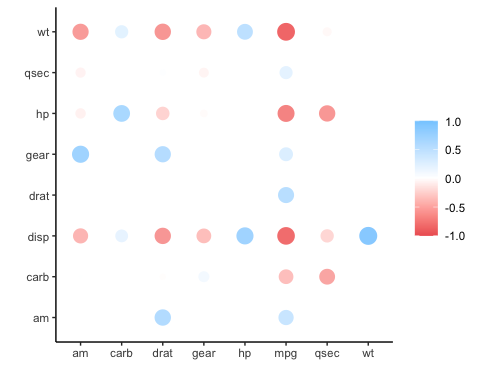

corrr is a package for exploring correlations in R. It focuses on creating and working with data frames of correlations (instead of matrices) that can be easily explored via corrr functions or by leveraging tools like those in the tidyverse. This, along with the primary corrr functions, is represented below:

You can install:
- the latest released version from CRAN with
install.packages("corrr")- the latest development version from GitHub with
# install.packages("remotes")
remotes::install_github("tidymodels/corrr")Using corrr
Using corrr typically starts with correlate(), which acts like the base correlation function cor(). It differs by defaulting to pairwise deletion, and returning a correlation data frame (cor_df) of the following structure:
- A
tblwith an additional class,cor_df - An extra “term” column
- Standardized variances (the matrix diagonal) set to missing values (
NA) so they can be ignored.
API
The corrr API is designed with data pipelines in mind (e.g., to use %>% from the magrittr package). After correlate(), the primary corrr functions take a cor_df as their first argument, and return a cor_df or tbl (or output like a plot). These functions serve one of three purposes:
Internal changes (cor_df out):
-
shave()the upper or lower triangle (set to NA). -
rearrange()the columns and rows based on correlation strengths.
Reshape structure (tbl or cor_df out):
Output/visualizations (console/plot out):
-
fashion()the correlations for pretty printing. -
rplot()the correlations with shapes in place of the values. -
network_plot()the correlations in a network.
Databases and Spark
The correlate() function also works with database tables. The function will automatically push the calculations of the correlations to the database, collect the results in R, and return the cor_df object. This allows for those results integrate with the rest of the corrr API.
Examples
library(MASS)
library(corrr)
set.seed(1)
# Simulate three columns correlating about .7 with each other
mu <- rep(0, 3)
Sigma <- matrix(.7, nrow = 3, ncol = 3) + diag(3)*.3
seven <- mvrnorm(n = 1000, mu = mu, Sigma = Sigma)
# Simulate three columns correlating about .4 with each other
mu <- rep(0, 3)
Sigma <- matrix(.4, nrow = 3, ncol = 3) + diag(3)*.6
four <- mvrnorm(n = 1000, mu = mu, Sigma = Sigma)
# Bind together
d <- cbind(seven, four)
colnames(d) <- paste0("v", 1:ncol(d))
# Insert some missing values
d[sample(1:nrow(d), 100, replace = TRUE), 1] <- NA
d[sample(1:nrow(d), 200, replace = TRUE), 5] <- NA
# Correlate
x <- correlate(d)
class(x)
#> [1] "cor_df" "tbl_df" "tbl" "data.frame"
x
#> # A tibble: 6 x 7
#> term v1 v2 v3 v4 v5 v6
#> <chr> <dbl> <dbl> <dbl> <dbl> <dbl> <dbl>
#> 1 v1 NA 0.684 0.716 0.00187 -0.00769 -0.0237
#> 2 v2 0.684 NA 0.702 -0.0248 0.00495 -0.0161
#> 3 v3 0.716 0.702 NA -0.00171 0.0205 -0.0566
#> 4 v4 0.00187 -0.0248 -0.00171 NA 0.452 0.442
#> 5 v5 -0.00769 0.00495 0.0205 0.452 NA 0.424
#> 6 v6 -0.0237 -0.0161 -0.0566 0.442 0.424 NANOTE: Previous to corrr 0.4.3, the first column of a cor_df dataframe was named “rowname”. As of corrr 0.4.3, the name of this first column changed to “term”.
As a tbl, we can use functions from data frame packages like dplyr, tidyr, ggplot2:
library(dplyr)
# Filter rows by correlation size
x %>% filter(v1 > .6)
#> # A tibble: 2 x 7
#> term v1 v2 v3 v4 v5 v6
#> <chr> <dbl> <dbl> <dbl> <dbl> <dbl> <dbl>
#> 1 v2 0.684 NA 0.702 -0.0248 0.00495 -0.0161
#> 2 v3 0.716 0.702 NA -0.00171 0.0205 -0.0566corrr functions work in pipelines (cor_df in; cor_df or tbl out):
x <- datasets::mtcars %>%
correlate() %>% # Create correlation data frame (cor_df)
focus(-cyl, -vs, mirror = TRUE) %>% # Focus on cor_df without 'cyl' and 'vs'
rearrange() %>% # rearrange by correlations
shave() # Shave off the upper triangle for a clean result
#>
#> Correlation method: 'pearson'
#> Missing treated using: 'pairwise.complete.obs'
fashion(x)
#> term mpg drat am gear qsec carb hp wt disp
#> 1 mpg
#> 2 drat .68
#> 3 am .60 .71
#> 4 gear .48 .70 .79
#> 5 qsec .42 .09 -.23 -.21
#> 6 carb -.55 -.09 .06 .27 -.66
#> 7 hp -.78 -.45 -.24 -.13 -.71 .75
#> 8 wt -.87 -.71 -.69 -.58 -.17 .43 .66
#> 9 disp -.85 -.71 -.59 -.56 -.43 .39 .79 .89
rplot(x)
#> Don't know how to automatically pick scale for object of type noquote. Defaulting to continuous.
datasets::airquality %>%
correlate() %>%
network_plot(min_cor = .2)
#>
#> Correlation method: 'pearson'
#> Missing treated using: 'pairwise.complete.obs'
Contributing
This project is released with a Contributor Code of Conduct. By contributing to this project, you agree to abide by its terms.
For questions and discussions about tidymodels packages, modeling, and machine learning, please post on RStudio Community.
If you think you have encountered a bug, please submit an issue.
Either way, learn how to create and share a reprex (a minimal, reproducible example), to clearly communicate about your code.
Check out further details on contributing guidelines for tidymodels packages and how to get help.